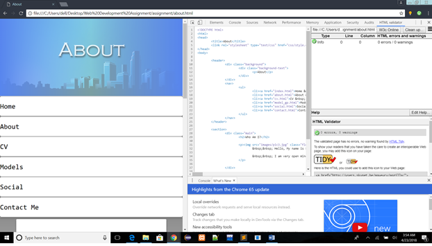

Models GP
Models of Good Practice (MGP) in User Interface (UI) Design:I have based my website’s design on the website ‘https://www.sitebuilder.com/. Looking at the header you can see that there are actually two different backgrounds and then a text. The first background is an image and the second background is a linear gradient which has low opacity which makes it look like a single image. Finally when the words are put on top of the different background, it makes you notice it the moment you refresh the site.
This is the screenshot of the site Sitebuilder
As for the body, I picked a site with an interesting way in material design. The name of the website is shiroyukitranslation
This design makes it look as if a piece of paper was floating in the picture of the background since it uses the material design concept. The use of two divs to make one corner rounded and the other flat is also interesting but I did’nt employ it my website.
I felt that these two sites had sparked my interest, so I used both the parts of the site and made my site the combination of these two concepts.
Site Validation:
I have made my website and hosted it in github with the url: My Website. So please visit my website.
The time I learned HTML and CSS opened my eyes to the world of computer. HTML and CSS bring the beauty of learning to a whole new level. It also started to feel like the screen is our playground and HTML and CSS are the toys that we use to play and have fun. We can make something out of nothing. The true thing to remember when making a website is the limit is the sky. There is almost nothing you can’t do. You can basically let your imagination run wild. Truth be told HTML and CSS is easy but the hard part is to get the picture of the website that you want in your head. Its almost an art. Nowadays lots of website designs are trending. Its turning the flat side of the screen into a 3d world.
I have validated my site as you can see below.
Index.html
About.html

cv.html
Social.html
Contact.html